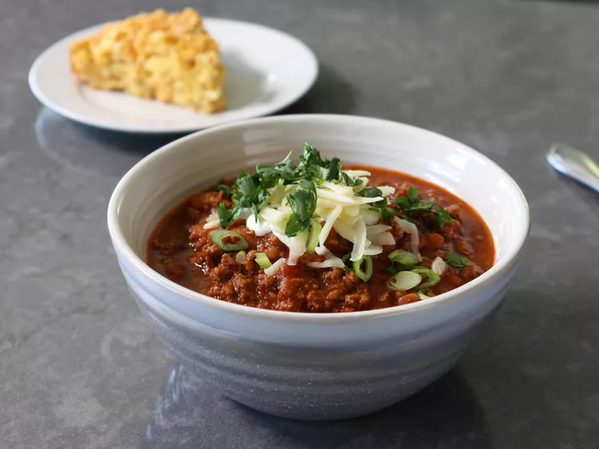

Lazy Hazy Beef Chili

Description
A simple and delicious beef recipe for cold times or whenever you want to warm up your life with some chili
ingredients
Chili
- 2 pounds ground beef
- 2 tablespoons chili powder, or to taste
- 1/4 teaspoon ground chipotle
- 1/2 teaspoon freshly ground black pepper
- 2 teaspoons kosher salt, plus more to taste
- 1/8 teaspoon ground cinnamon
- 12 ounces hazy IPA beer
- 2 teaspoons white sugar
- 1/2 teaspoon dried oregano
- 1/4 teaspoon garlic powder
- 1 (14.5 ounce) can of diced fire-roasted tomatoes with green chilies
- 2 (16 ounce jars) extra chunky salsa
- 2 (15 ounce) cans pinto beans, drained
Toppings
- 1/2 cup sour cream
- 1/2 cup sliced green onions
- 1 cup shredded sharp Cheddar cheese
- 1/2 cup chopped cilantro
Directions
- Add beef to a dry cold pot, and turn heat to high.
- Upon sizzling, break up the beef into small pieces with a potato masher or spatula. Meat can be broken up depending on the desired texture. Continue to cook and break up beef until it is no longer pink (~7 min).
- Add chili powder, chipotle, black pepper, salt, and cinnamon to the pot. Cook, stirring, for 1 minute, then pour in beer.
- Stir, scraping the browned bits from the bottom of the pot as you do. Let mixture boil until liquid is reduced by about half (2-3 min).
- Add sugar, oregano, garlic powder, diced tomatoes and jarred salsa. Stir in; return mixture to a simmer.
- Stir in beans, reduce heat to medium-low, and cook, stirring occasionally, until chili is thickened and flavor is developed to your liking, about 1 hour.
- Taste, adjust the seasoning. Top with sour cream, green onions, Cheddar cheese, and cilantro as desired.